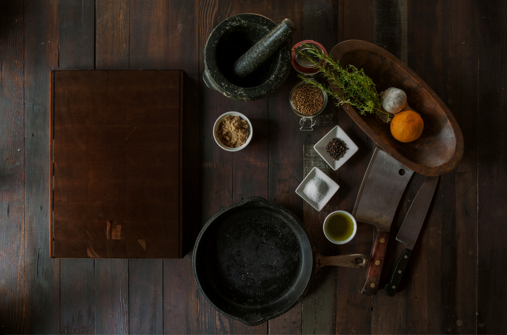
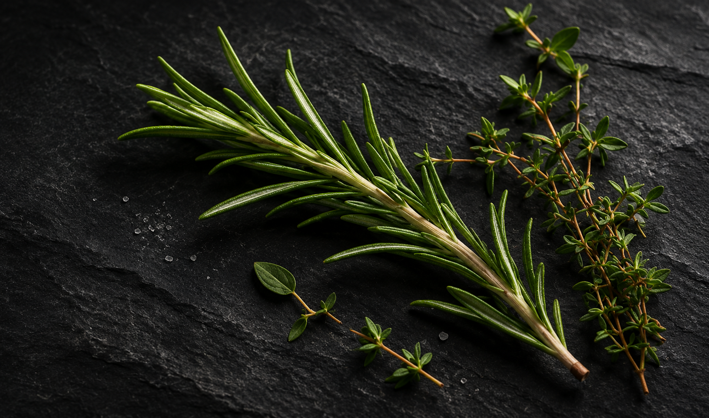
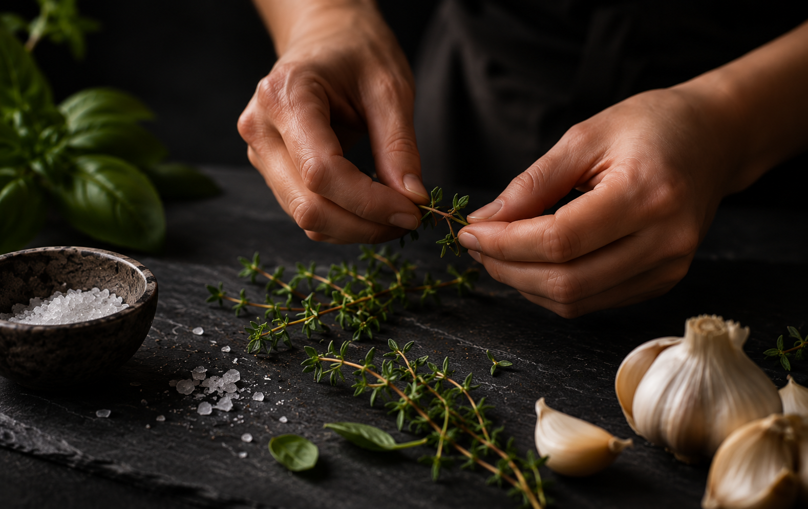
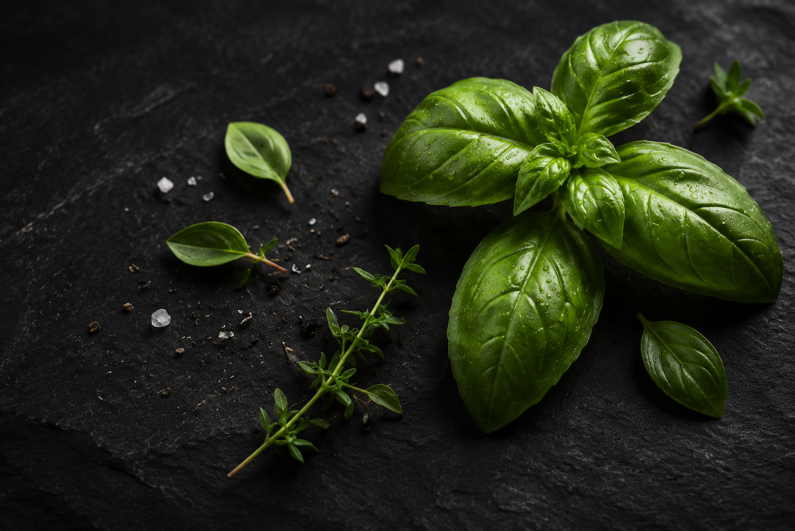
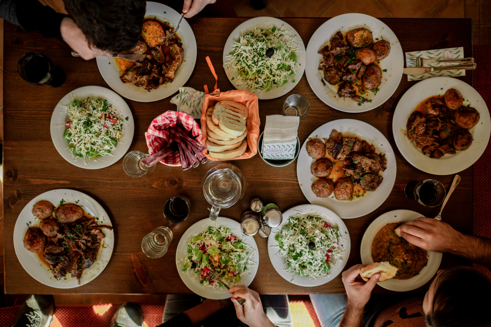

OUR STORY
BEHIND THE RECIPES
From simple ingredients to recipes worth sharing
ABOUT US
EVERY RECIPE HAS A STORY
FROM SHARED DINNERS TO SHARED RECIPES
Sophie, Noah and Emily became friends through their shared love of food. What began as casual dinners together, soon turned into evenings spent trying new recipes, discovering new flavours and experimenting in the kitchen. Cooking became their was of spending time together - and before long, they had collected more recipes and ideas than they knew what to do with.
Along the way, each of them naturally found their role. Sophie loved developing and perfecting the recipes. Noah began capturing their creations through photography, and Emily turned their ideas and experiments into stories. Together they realised they had everything they needed to create something of their own.
That idea became a place where they could bring everything together: the recipes they loved, the photographs that captured them and the stories behind every dish. What started around their own table became a collection created to inspire others to cook, share and make memories of their own.

MEET THE TEAM
THE PEOPLE BEHIND THE FOOD
A CLOSER LOOK
MORE THAN JUST RECIPES
THE BEAUTY OF SIMPLE THINGS
Fresh ingredients have a special way of sparking creativity. From the scent of rosemary to the flavor of freshly picked herbs, it's often the simplest things that inspire the best ideas.


THE ART OF COOKING
Preparing food from scratch brings a certain kind of joy. Taking your time, working with your hands and watching simple ingredients come together is all part of the experience.
THE FINISHING TOUCH
It's often the smallest details that bring everything together. A sprinkle of fresh herbs, a final touch of seasoning or a little extra care can make a dish feel complete.

FROM OUR KITCHEN TO YOUR TABLE
Created to be cooked, shared & enjoyed

MADE TO BE SHARED
GOOD FOOD. BETTER TOGETHER
We believe the best recipes are the ones that bring people together - at the table and beyond
EXPLORE OUR RECIPES →